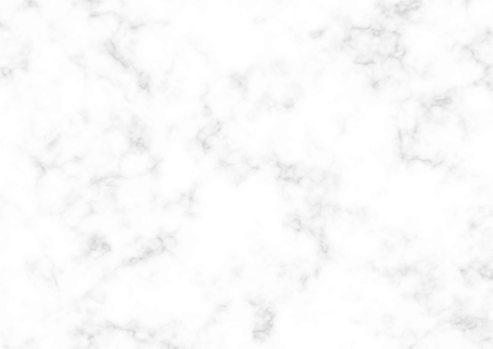
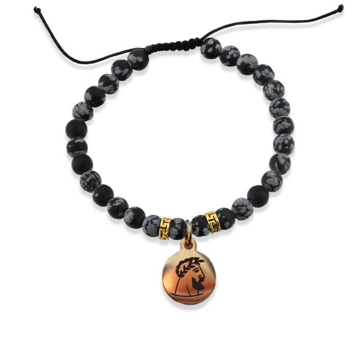
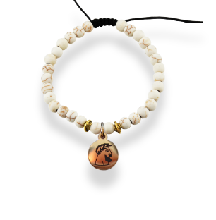

 


Shop
Maße des Armbandes:
Maße des Armbandes:
Nur das Beste für Dich.
Wirkung des Onxy als Heilstein
Länge: ca. 19.5cm
Stein: Onyx
Solltest Du mit dem Armband nicht zufrieden sein, kannst Du es selbstverständlich innerhalb von 30 Tagen
zurückgeben. Ohne Risiko
Laut der Universal gelehrten Hildegard von Bingen soll der Stein auf Magen, Milz sowie Herz und Augen
positiv wirken. Er soll sehr gute Auswirkungen auf die Haut, auf Nägel und Haare haben und sie positiv
beeinflussen. Der Stein sorgt für eine gleichmäßige Durchblutung im Körper und kräftigt das Immunsystem.
Auch bei Wunden kann der Onyx helfen, vor allem bei der Abheilung von Narben oder Sonnenbrand. Er wird
insgesamt zur Stärkung eingesetzt - was sich auf Körper und Nerven bezieht, sowie auch auf Seele und Psyche.
Breite: 6mm
Band: Stoff
Gewicht: ca. 10g
Durchmesser: verstellbar 6,5 - 9cm | 2,55 - 3,55 Zoll
Material: Edelstahl
Amulett: 10mm
Qualität: rostfrei & reißfest
Wunderkind Original
Armband Schwarz
€19,95 inkl. Mehrwertsteuer
81 vorrätig
Vergoldendes Amulett mit 6mm Naturstein Onyxs Perlen, verstellbares & reißfestes Armband
Armband anfragen
Beschreibung
@ WUNDERKIND ORIGINAL - alle Rechte vorbehalten.
Produkte
Edition One